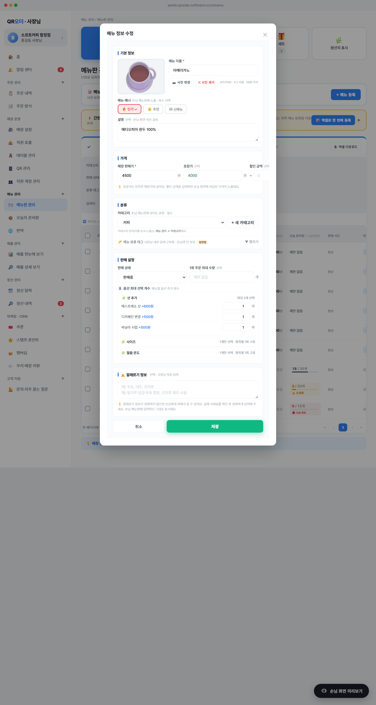

← 목록으로

📷 화면 캡처 · 메뉴 정보 수정 모달 — 5개 섹션 카드 구조 + 사진 4:3
변경 전
사진(80x80 정사각) + 모든 필드가 시각 구분 없이 쭉 나열. 노란색 강조 「메뉴 분류 태그」 박스가 본문 가운데에 크게 노출되어 시선 분산. 가격·상태·설명·수량 순서가 산만.
변경 후
5개 섹션 카드(기본 정보 / 가격 / 분류 / 판매 설정 / 알레르기 정보)로 그룹화. 사진 4:3(160x120)으로 키움. 노란 분류 태그는 접기 → 「설정됨」 배지. 모달 너비 600px로 살짝 키움.
주요 요소
🎯 기능·목적
- 관련 필드를 그룹으로 묶어서 한눈에 영역 파악
- 등록·수정 시 사장님이 정신적 부담 적게 진행 가능
- 섹션별로 시각적 휴식 — 회색 배경(
#fafbfc) 위 흰 카드 떠 있는 형태
⚙️ 동작·상태값
- 섹션 순서: ① 기본 정보 → ② 가격 → ③ 분류 → ④ 판매 설정 → ⑤ 알레르기 정보
- 각 섹션 헤더 — 좌측 파란 막대 + 굵은 텍스트 (예: ⚙️ 판매 설정)
- 섹션마다 흰 배경 카드 + 1px 회색 테두리 + 라운드
- 섹션 안에 라벨·입력 묶음 표시
🔌 데이터·연동
- CSS:
.me-sec · .me-sec-head · .me-lbl · .me-lbl-sub
- 모달 본문 배경:
#fafbfc (외곽 차분)
- 카드 배경:
#fff
- 모달 너비:
max-width:600px, max-height:76vh
⚠️ 예외·UX 문구
- 섹션 5(알레르기) 헤더에 라벨 인라인 추가 — "선택 · 사장님 자유 입력"
- 섹션 4(판매 설정) 안에 옵션 한도 섹션과 준비량 안내 박스 포함
- 섹션 1(기본 정보) — 사진/이름/배너/설명 한 그룹
2
메뉴 사진 4:3 비율
섹션 1 (기본 정보) · 좌측 사진 박스
🎯 기능·목적
- 실제 메뉴 사진은 보통 4:3 비율로 촬영됨 → UI도 동일 비율
- 사장님이 사진을 어떻게 잘려 노출되는지 직관적으로 확인
- 1:1 정사각으로 강제 변형되던 옛 UX 개선
⚙️ 동작·상태값
- 사진 박스:
width:160px; aspect-ratio:4/3 → 160×120
- 점선 테두리(미업로드) → 파란 테두리(업로드 후)
- 호버 시 테두리 파란색
- 내부 img —
object-fit:cover로 4:3 비율 유지 자동 크롭
- 업로드 안내:
JPG·PNG · 4:3 비율 · 5MB 이하
🔌 데이터·연동
- CSS:
.me-photo 클래스
- img 강제 cover —
.me-photo img { width:100% !important; height:100% !important; object-fit:cover !important; }
- 메뉴 카드 그리드 사진도 4:3 (68×51) 동일 적용
- 저장 데이터:
m.img (base64 data: URL 또는 이모지)
⚠️ 예외·UX 문구
- 사진 미업로드 — 📷 아이콘 + "4:3 사진" 안내 텍스트
- 이모지(이전 데이터) — 이모지도 cover 처리되지만 자연스럽게 보임
- 업로드 — 클릭으로 파일 선택 + 「📷 사진 변경」/「✕ 사진 제거」 버튼
- 5MB 초과 사진은 알림 없이 그대로 저장(검증은 백엔드)
3
분류 태그 접기/펼치기
섹션 3 (분류) · 카테고리 select 아래
🎯 기능·목적
- 내부 검색·구분용인 「대분류·중분류·소분류」 태그를 기본 숨김
- 대부분 사장님은 카테고리만 쓰고 태그는 안 씀 → 시각 복잡도 감소
- 이미 설정된 경우 「설정됨」 노란 배지로 인지
⚙️ 동작·상태값
- 기본 닫힘 —
state._menuEditTagsOpen = false
- 헤더 클릭 시 펼침/접기 토글 → 모달 재렌더
- 접힌 상태에서도
catL2/catL3/tag3 hidden input으로 값 보존 (저장 OK)
- 설정값 존재 시 "설정됨" 노란 배지 표시
- 화살표 —
▼ 펼치기 / ▲ 접기
🔌 데이터·연동
- UI 상태:
state._menuEditTagsOpen: boolean
- 저장 필드:
m.catL2 · m.catL3 · m.tag3 (string, default '')
- datalist로 기존 입력값 자동 완성
- 접힌 상태에서도 input의 value 유지 → 저장 시 정상 반영
⚠️ 예외·UX 문구
- 헤더 라벨:
🏷️ 메뉴 분류 태그 (사장님 내부 검색·구분용 · 손님엔 안 보임)
- 설정 안 됨 — 배지 없음, 안 펼치고 그대로 저장 가능
- 잘못 설정한 값도 input은 유지 (사장님 의도 존중)
5개 섹션 상세 내용
① 기본 정보 — 사진(4:3) · 메뉴 이름 · 메뉴 배너 · 설명
② 가격 — 매장 판매가 · 포장가 · 할인 금액
③ 분류 — 카테고리(필수) · 메뉴 분류 태그(접기)
④ 판매 설정 — 판매 상태 · 1회 주문 최대 수량 · 옵션 최대 선택 개수 · 오늘 준비량 안내
⑤ 알레르기 정보 — 자유 텍스트 textarea